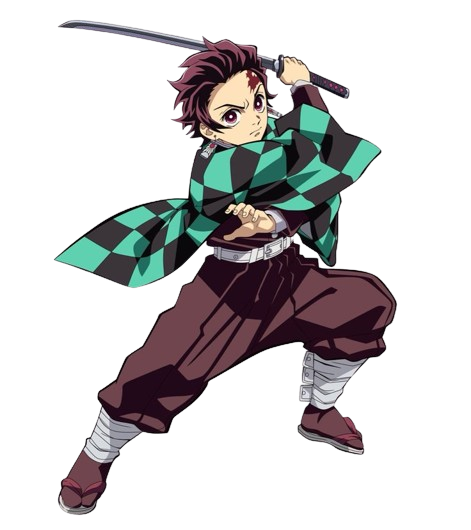

TANJIRO KAMADO
Tanjiro's life turns into a nightmare when a demon slaughters his entire family and turns his younger sister, Nezuko, to the dark side. Driven by anger and love for his brothers, Tanjiro joins the Demon Slayer Corps to eradicate demons. He also hopes to return Nezuko to being human again.
Tanjiro is known as a warm and kind person. But, he was determined to make a difficult decision. He couldn't imagine that the devil should be spared or that killing would make him no better than his enemy. That's why, Tanjiro always completes his tasks.
BREATHING STYLES
Water Breathing User
Sun Breathing User
